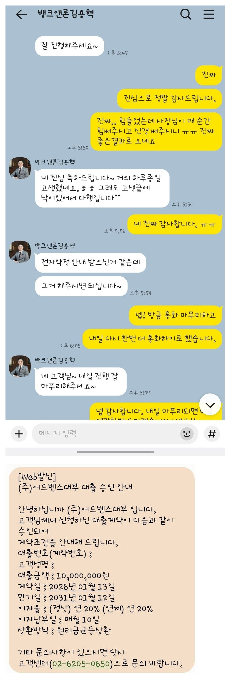

[개인회생자대출] 대출 후기, 회생 후 기대출 1100만원에서 1000만원 대출 후 일부 대환 정리, 여유자금 약 420만원.. 너무 감사합니다.
개인회생 40회차 중 7회차 진행중이고, 6회납 1회 미납, 1회차 진행하다 하차하고 2회차 재회생
지방세랑 국세랑 좀 이것저것 밀려있었던 상황이고 기대출도 지저분하게 여러군대 있어서 나오기 힘들줄 알았습니다.
재직은 7개월, 세후 받는 금액이 작지는 않지만 다른곳에서는 아마 어려울거다,
기대출이 너무 많다고 안된다고 하시더라구요.
하지만 대표님은 상세하게 알아봐주시고 가능한곳 현실적으로 정리해서 말씀주시고
작년 12월달에 1월 급여받고 다시한번 이야기 해보면 결과가 달라질 수 있을거라는 말씀에 믿고 진행했는데
신차대출 제외하고 나머지는 하나로 묶어서 정리하고 지방세 국세 전부 깔끔하게 정리할 수 있었습니다..
여유자금도 400만원 넘게 생겨서 진짜 숨통이 확 트이네요. 정말 감사합니다. ㅠㅠ

https://cafe.naver.com/cityman88/309919